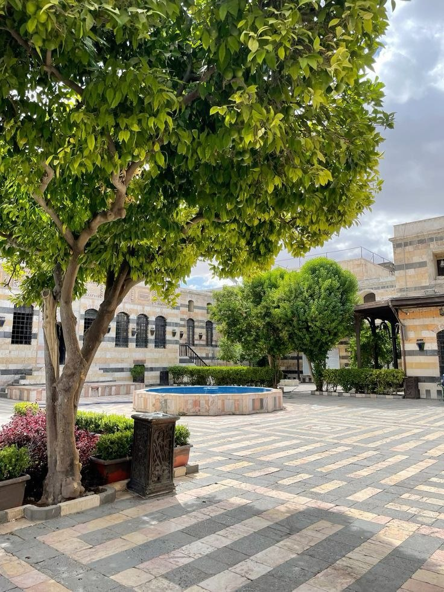
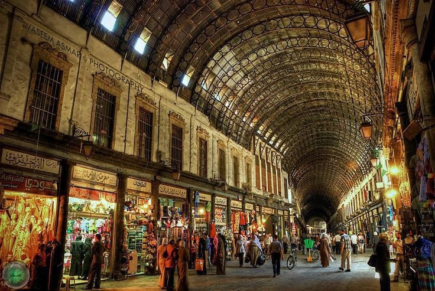
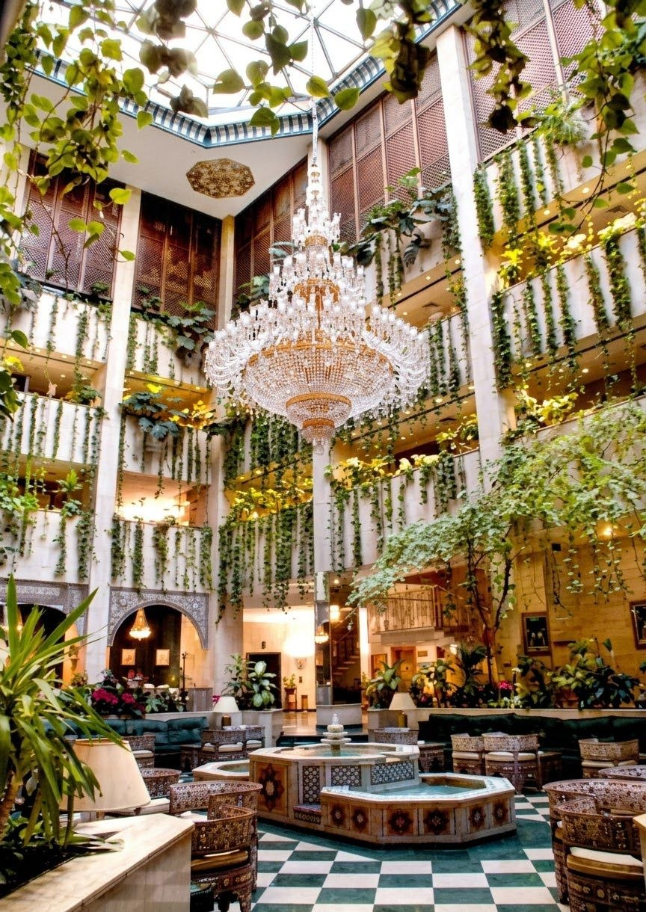
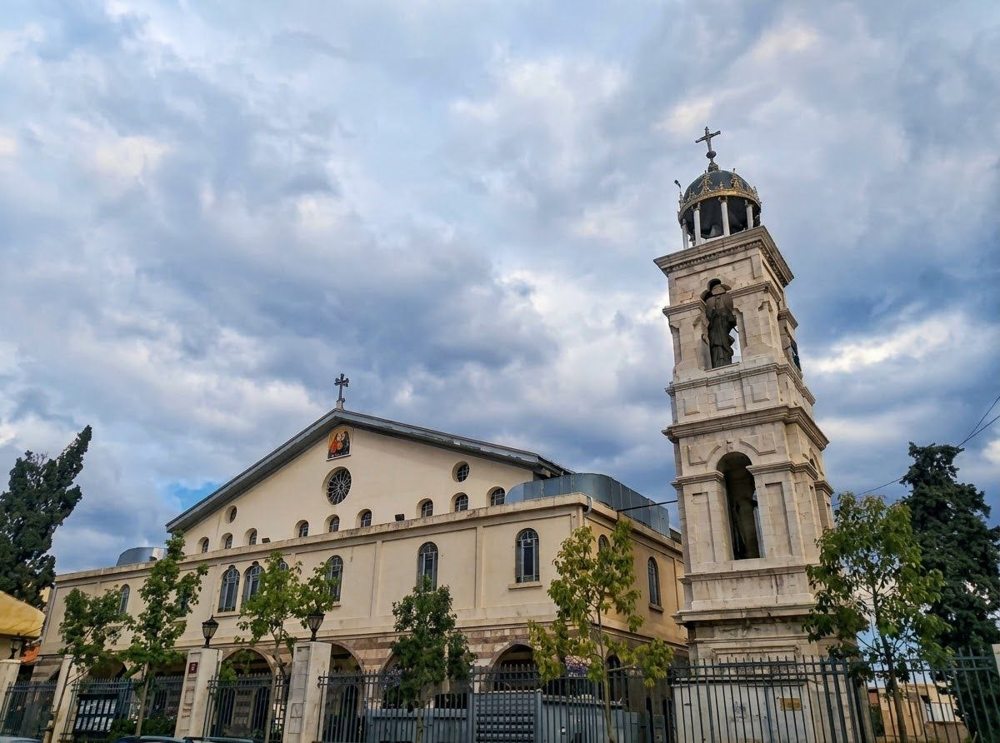

قصر العظم
يقع هذا المعلم التاريخي في قلب دمشق القديمة ،مجاوراً للجامع الأموي الكبير ، شُيّد القصر عام 1749م كدار لوالي دمشق أسعد باشا العظم، يُبهر القصر زواره بهندسته الدمشقية الفاخرة التي تعتمد على الأبلق الرخام الملون.


سوق الحميدية
يعد أشهر أسواق دمشق ويمتد كشريان نابض من شارع الثورة ليصل مباشرة إلى قلب الجامع الأموي ، بدأ بناؤه عام 1780م في عهد السلطان عبد الحميد الأول ،يبهر السوق زواره بسقفه الحديدي المقوس المخرم الذي تنفذ منه أشعة الشمس.
فندق الشام
هو من أشهر المعالم الحديثة في العاصمة، ويحتل موقعاً استراتيجياً في مركز المدينة التجاري بدمشق عند شارع ميسلون ، افتُتح الفندق رسمياً عام 1983م،يُبهر الفندق زواره بتصميمه العمراني الضخم وإطلالاته على جبل قاسيون.


الكاتدرائية المريمية
ُتعد من أقدم كنائس العالم وتعود للقرن الأول الميلادي. تقع في الحي المسيحي التاريخي، وأصبحت المقر الرسمي لبطريركية الروم الأرثوذكس منذ عام 1342م، وتتميز بعمارتها البيزنطية .